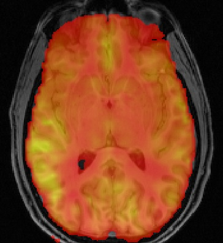

Contents
- Introduction
- User Guide
- Tutorial
- Further Information
BASIL: Bayesian Inference for Arterial Spin Labeling MRI
It is becoming increasingly common to aquire ASL data at multiple times post-inversion and fit the resultant data to a kinetic curve model. This permits problems in perfusion estimation associated with variable bolus arrival time to be avoided, since this becomes a paramter of the model whose value is determined from the data. Commonly the model fitting will be performed with a least squares technique providing parameter estimates, e.g. perfusion and bolus arrival time. Here we provide details on the use of BASIL on resting-state ASL data, as an alternative to least squares methods, which performs fast Bayesian inference offering:
- Voxel-wise estimation of perfusion and bolus arrival time along with parameter variance (allowing confidence intervals to be calculated).
- Incorporation of natural varaibility of other model parameters, e.g. values of T1, T1b and bolus duration.
- Spatial regularization of the estimated perfusion image.
- Correction for partial volume effects (where the appropriate segmentation information is available).
If you have resting ASL data with only a single inversion time then you can still use the tools in BASIL for perfusion quantification. If you want to perform analysis of a functional experiment with ASL data, i.e. one where you want to use a GLM, then you should consult the perfusion section of FEAT, or if you have dual-echo (combined BOLD and ASL) data then consult FABBER.
The BASIL toolset
BASIL is supplemented by a collection of tools that aid in the creation of quantitative CBF images from ASL data, you should select the appropriate tool(s) for the data you have and analysis you require.
- Oxford_asl - This is a command line tool that provides a single means to fit a kinetic curve model to ASL data for CBF quantification, including absolute quantification via a calibration image and registration of the data. This will generally be the first place to go for most people who want to do fairly standard processing of ASL data.
- BASIL (itself) - this is the core tool that performs kinetic curve model-fitting to the data using a Bayesian algorithm. You should only need to use it directly for more custom analyses than that offered by oxford_asl.
- QUASIL - A special version of BASIL optimised for QUASAR ASL data, includes model-based or model-free analyses along with calibration.
- asl_calib - this tool takes a supplied calibration volume and calculates the magnetization of arterial blood allowing CBF to be quantified in absolute units. The main functionality of asl_calib is built into oxford_asl (and QUASIL), but more options are available when using it directly.
- asl_reg - this tool is designed to assist in registration of (low resolution) ASL images to structural or standard brain images. The functionality of asl_reg is built into oxford_asl.
- asl_file - this tool is designed to facilitate the manipulation of ASL data volumes to get data in the right form for oxford_asl and BASIL.
Referencing
If you use BASIL in your research, please make sure that you reference at least the first of the articles listed below, and ideally others from the list depending upon which options you choose in your analysis.
Chappell MA, Groves AR, Whitcher B, Woolrich MW. Variational Bayesian inference for a non-linear forward model. IEEE Transactions on Signal Processing 57(1):223-236, 2009.
If you employ spatial priors you should ideally reference this article too.
A.R. Groves, M.A. Chappell, M.W. Woolrich, Combined Spatial and Non-Spatial Prior for Inference on MRI Time-Series , NeuroImage 45(3) 795-809, 2009.
If you fit the macrovascular (arterial) contribution you should reference this article too.
Chappell MA, MacIntosh BJ, Donahue MJ, Gunther M, Jezzard P, Woolrich MW. Separation of Intravascular Signal in Multi-Inversion Time Arterial Spin Labelling MRI. Magn Reson Med 63(5):1357-1365, 2010.
If you employ the partial volume correction method then you should reference this article too.
Chappell MA, MacIntosh BJ, Donahue MJ,Jezzard P, Woolrich MW. Partial volume correction of multiple inversion time arterial spin labeling MRI data, Magn Reson Med, 65(4):1173-1183, 2011.
If you perform model-based analysis of QUASAR ASL data then you should reference this article too.
Chappell, M. A., Woolrich, M. W., Petersen, E. T., Golay, X., & Payne, S. J. (2012). Comparing model-based and model-free analysis methods for QUASAR arterial spin labeling perfusion quantification. doi:10.1002/mrm.24372